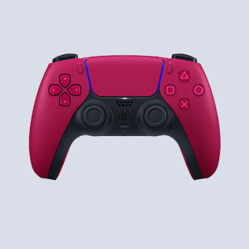
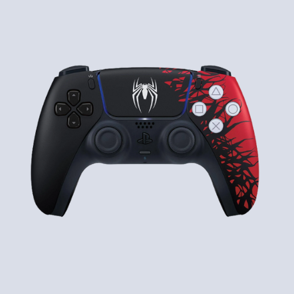
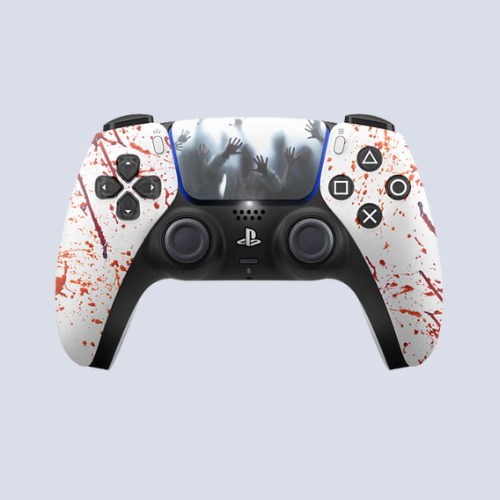

Dual Sense

DualSense Cosmic Red
R$ 425,00

DualSense - Galactic Purple
R$ 499,90

DualSense Branco
R$ 404,99

DualSense Preto
R$ 404,99

DualSense - Starlight Blue
R$ 497,00

DualSense Ragnarok
R$ 699,00

DualSense Collateral
R$ 799,00

DualSense Cherry Blossom
R$ 699,00

DualSense Marvels Spider-Man 2
Limited Edition
R$ 464,99

DualSense Psycho
R$ 699,00
Especificações Técnicas
| Fabricante | Sony |
|---|---|
| Conexão sem fio | O DualSense se conecta ao PlayStation 5 via Bluetooth sem fio. |
| Bateria recarregável | Possui uma bateria interna recarregável via porta USB-C. |
| Tela sensível ao toque | Apresenta uma tela sensível ao toque no centro para interações diversas. |
| Alto-falante integrado | Conta com um alto-falante integrado para áudio adicional. |
| Microfone embutido | Inclui um microfone embutido para comunicação online. |
| Sensores de movimento | Equipado com sensores de movimento, como acelerômetro e giroscópio. |
| Feedback tátil | Oferece feedback tátil avançado para uma experiência mais imersiva. |
| Gatilhos adaptativos | Os gatilhos L2 e R2 têm resistência variável para maior realismo. |
| Design ergonômico | Projetado ergonomicamente para conforto durante o jogo. |
| Porta de áudio de 3,5 mm | Possui uma porta de áudio de 3,5 mm para conexão de fones de ouvido com fio. |